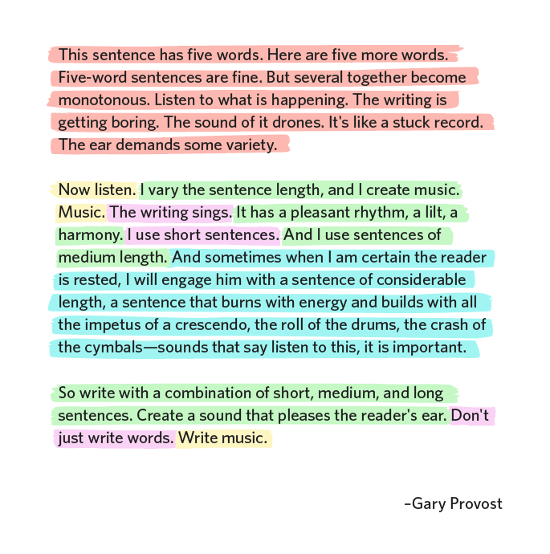

On Productivity When You Can't Use Your Hands
As an ML practitioner, gamer, musician, and sports enthusiast,
I work and play with my hands a lot.
I recently began experiencing some pins and needles pain in my index
fingers, thumbs, and wrists, and consulted a med school friend who is
passionate about hand surgery:
“Whatever you’re doing, if you continue in this fashion you will not
be able to play violin or video games or type in a couple years.”
I knew exactly what I was doing. I type too hard and too fast.
I work fast -
speed is one of my principles -
and type at ~140 wpm. This intensity was exacerbated by striking
out on my own in March 2024 as an independent consultant and not only
building projects for clients but also writing volumes of cold emails,
LinkedIn messages, and X DMs to source the next round of projects. After
thousands of emails and tens of thousands of lines of code, with little
to no breaks for weeks at a time, my hands finally gave out under the
strain and I went from being a monster at the keyboard to a big fat 0.
Additionally, I’m a violinist, and I knew it would affect my ability
to play at a high level. Good luck playing
the Sibelius
or
the Tchaikovsky
without strong hands and wrists!
I couldn’t abandon my work, but neither could I continue in this fashion.
So I discarded all my priors about what was possible and started optimizing
for one metric: decreased physical movement. I’m detailing my optimizations
below for others with broken hands, and will update this list as I discover
new techniques.
Physical Improvements: Emergency Tactics to Relax Keyboard Technique
-
Being cognizant of whether my hands are warm (they probably aren't).
If they aren't, I warm them up using some old
violin warmup techniques.
You'll look dumb. Lean into it.
-
Reducing my typing speed until I applied no pressure and
never lifting my fingers off the keyboard (thus reducing impact,
the biggest immediate pain agent). This alone lowered my speed from ~140
wpm to ~85 wpm. Ouch.
-
All my wrist pain was in the right wrist, which was largely from
the pronation of hitting Option+Delete to delete words and hitting
the Delete button. I now move my right wrist far to the right when
hitting Option+Delete, and also minimized the number of times I
need to hit the Delete button via 100% accuracy, which I can achieve
at 85 wpm. On MacOS, there are also the settings
"key input rate"
and
delay until repeat".
Max out the first and minimize the second. When you hold down a key you'll see why.
-
Thinking ahead about my next action as I’m executing a current action.
My
OODA-esque-loop
at the computer was: think, decide on an action,
blitz out the action as fast as possible, and repeat in a serial
manner. You wouldn't last a minute in the
Lost Temple
they raised me. Now to maintain flow I think ahead about my next action
so I smoothly glide from one action to the next. This has reduced
hand strain and even changed the way that I think!
Strategic Improvements: Hack Your Communications
Seriously! Type less! Before the Internet there wasn’t enough information movement/storage so writing many words
was a reasonable way to increase communication bandwidth and persistence. Now we have a different problem -
trying to extract signals from a deluge of information that is recorded forever. Therefore decorum is less
important today and brevity helps you stand out (since people abuse LLMs).
The best improvements you can make here are:
-
Make a phone call. Why? Voice is higher bandwidth, you type less, you resolve issues in
less absolute time. Unrelated to the pain in my hands, it's also good for non-work relationships
too ;) I call my friends and family and girls I'm seeing instead of texting intermittently.
In a world where everything is communicated via text, calling helps you stand out.
And it's WAY more fun!
-
Make long-form media short: Emails can be 1 word long. They can be 2 letters long.
I'm dead serious. It's extremely
freeing, and when you respond quickly, people respond faster to you, and your
time seems more valuable (and it should be!). Be concise and reduce back and
forth at all costs.
-
Make short-form media longer: Huh? What I mean is, make Slacks longer and formal
so you can respond
less. This one rule, if everyone followed it, would increase global GDP by 5% overnight.
This rules sets a precedent with the other party to reduce the number of back and
forths, which means you can dodge the dripfeed of followup notifications that are
wireheading your monkey brain,
buying you concentrated time to build things and enjoy life. Also less typing.
Strategic Improvements: God Gave You a Mouth, Use It
Speak don't type! Apple’s (and I assume other HW manufacturers') dictation
technology is fantastic (though not for coding). I now dictate my text messages,
emails, and code comments.
I’m dictating this piece right now. This is an adjustment because thinking via typing is different
than thinking via speech but I now “write” faster because speaking is ~3x faster
than typing at a keyboard and ~5x faster than typing on your phone.
This is the only time I'll talk about my phone, but between dictating and getting 1Password+
Face Recognition, I never type into my phone anymore. And I'll say it again, dictate into your phone.
You will never go back.
Simply improving at writing and speaking off the cuff helped. The only book you need to read is
On
Writing Well, by William Zinsser. You will use fewer words because
most words are superfluous and you'll have agency over what words you do choose.
Like all subjective skills, people don’t improve at
writing because they never define loss functions, and this book
is a jumpstart for improving basic writing mechanics. This book cut the number of
words I write/dictate in half.
Getting better at dictation is a matter of volume. You'll
know you've got it when you start dictating
in a ridiculously magnanimous voice in a public workspace. That's
when you'll know you hear the music!

Tactical Changes: Some Examples of How to Turn Computer Into a Video Game
- Set up email signatures on your email client.
- Set up a Calendly and ping the link instead of the typical back and forth over email
- Saying “Wake up” and "Go to sleep" activates/deactivates dictation on MacOS if enabled
- Cmd+Space+ch=Chrome
- Cmd+Space+vi=VisualStudioCode
- @L=Chrome URL bar
- @pl: Progress Log for big projects
- @a: Tracking sheet for boring things I call it "The Bridge"
- @p: perplexity.ai
- @o: ChatGPT (or Claude, depends on my favorite at the time)
- @c: Google Calendar
- @d: personal-website
- @g: Gmail
- @l: LinkedIn
- @gh: GitHub
- @gd: Google Drive
- x: x.com
- @v: vim commands cheat sheet (because I forget controls constantly and I’m looking for new shortcuts!)
- r alias to "ranger" in my Terminal for browsing files at lightspeed
- alias p=python3
- alias a="source .venv/bin/activate"
- alias j="jupyter notebook"
This is just a sampling, I have many more bespoke shortcuts, stuffed into my ~/.zshrc and
VSCode. OGs will scoff at these, but younger programmers like me aren't aware of how
much faster you can move.
I love these shortcuts because while they save only a second at a time, they take 15 seconds
to set up and save days of my life.
Automation Changes: Trade Effort for Thought to Save your Hands
LLM-ify everything. With voice dictation, LLMs are a superpower for avoiding
typing. My marginal utility function is different from those without hand
pain, but I'll pay for any solution that reduces my keystrokes. A couple important techniques
below.
- LLMs are underappreciated for idiosyncratic formatting. I'll illustrate by example.
I dictated
this entire essay into Google Docs, asked an LLM to clean it up using its judgment of natural language, fixed
the section above where I use lots of abbreviations, added and formatted the list tags, added in
a list of links that I desired around relevant phrases and automatically put newline breaks every 60 characters
for HTML readiability. I typed about 10% of this essay. And it's long!
- Writing important emails, cover letters, and client texts. The problems people run into are
preserving their unique voice and curbing LLM verbosity. The key is
to amass your favorite personal written work and keep it handy in a
folder that you can upload as context. With enough
in-context examples LLMs adjust (especially Claude 3.5 Sonnet) and will write
satisfactorily at rapid speeds. I do admit I spend much time manually editing these,
perhaps out of nervousness, so the jury is out.
Lastly, I know this is hotly contested, but not only do LLMs help me avoid typing, but as a
science and design guy, they definitely help
me code. I’ll likely write a piece where I compile instances where LLMs have
measurably improved my productivity, but here’s generally how I make a new feature without having to
abuse my hands: the organizing principle is work top down and introduce the LLM gradually.
- Upload relevant codebase files and talk about the problem with GPT-4o and plan
changes. Use specific language and ask the model to refrain from generating any code.
The key is for you and the LLM to develop a clear mental model, because a classic failure
mode for human+LLM coding is to mistake an LLM's high-level BS for actually useful
high-level planning. You’re trying to steer the LLM into the right activation spaces by
making sure the architectural details are sound. Crucially, you want to avoid verbosity
and work towards a minimal design:
“what are the options for libraries?”
“Do we need this library?” “Could we only edit one module?” “Think about the plan again
as if you had to deliver it in 1 hour” “Great, now summarize all the changes we are going
to make and explain why succinctly”. If you need prompt inspiration, read
this paper
on the commute for inspiration.
- Also, while context windows are increasing, models don't perform well on NeedleBench
as a function of the context size, so I'd cap the amount of tokens you upload to 40%
of the stated window, leaving you another 10% of the window to converse with and rework
the LLM response.
- In a new codebase ask for an architectural summary of
the codebase. Sometimes I’ll ask for a Python script that will
sketch out the architecture in a drawing library. Be creative! This is faster than grokking a library
by reading, and the LLM is good at doing this, especially if you feed relevant
documentation.
- I develop a clear mental model so that even if it’s wrong I know what I need to refine.
The goal is fewer at bats at the Terminal, because it’s generally in the frenzied flipping
between Terminal, VSCode, and LLMs that I forget to chill tf out and type harder/faster.
- Simultaneously, I read the code with
VSCode shortcuts
and
Vim bindings. My favorites:
[#]gg sends me to specific lines, e w $ and ^ for jumping around a line, gh for seeing a
declaration, gd for hopping to a declaration, Cmd+option+left/right for going back and
forth between tabs, etc. Do I introduce slightly more typing with Vim? Yes. But moving my
hand to the mouse is too slow and pronating my hand to a trackpad is painful.
- Hopefully the LLM has enough context now to ace or almost ace the code generation (Remember,
we haven't typed many words yet!). Literally
just say: “Okay write the code succinctly, keeping in mind everything we’ve discussed”. If
you've never conversed for a while with an LLM and refined its thinking in
detail, then you'll be blown away by the quality and thoroughness of the response even if
the code isn't perfect.
When a friend complains about LLM quality, I look through their prompt history and
it's always the same story...
- In general, you should anthropomorphize the LLM and have a “diversification” mindset:
getting one good query+response is better than spamming the LLM and it's better on your hands.
It’s all about time-to-new-feature amortized across all features: sometimes you will ace a
feature, and the time (and typing!) saved here is worth a few wasted minutes. I also don't
treat this time as wasted because it never hurts to rubber-duck your
approach. We don’t need fancy AI SWEs (yet), just the basic chat interface will do.
In my experience, out of 6 features, an LLM will often ace 1,
mostly build 2 of them, scaffold another 2, and botch the last. In almost all cases, I type
less, so I've emerged victorious.
- Side note: the more you modularize, the fewer abstractions an LLM has to hop,
which they suck at because they have smol brains for now.
The true 10x engineers I’ve
stumbled across in the LLM era are all senior engineers who see
modularization far down the line, spin up 4 LLMs, ace 1 module, semi-edit 2, manually write
the last, and have another LLM chat knit them all together and write testing - all in
a couple hours. An even rarer skill is knowing in advance if the LLM can ace the task
and delegating accordingly. I've seen this only once and it was scary. I had the same feeling
when my old cracked boss pulled up his custom Neovim for a joyride in our first pair
programming session and wrote an identity management system from scratch, no Google required.
- Side side note: I suspect one reason we haven’t seen many LLM 10xers is because
cracked senior engineers don’t need to code much and don’t bother building LLM skills -
which is a shame because they’re exactly the engineers who would leverage LLMs the best.
- This is a lesson every programmer learns, but TDD reduces typing. We specify
the goal and boom we have a dev loop, which reduces frivolous efforts and pushes you to
be cerebral instead of physical. Your loop doesn’t have to be
a test - if you’re implementing AlphaFold3
in PyTorch (don't do this alone, it hurt me), you define the input and output
tensors, and get coding. Often, once your code runs you’re already done with your program.
I also suspect but have not confirmed that it helps the LLM to see the shape of the output.
- I started running tests automagically when I hit save, so I don’t type into
Terminal during a dev loop. Look up how to run a command on Cmd+s in Neovim or VSCode, and
then run something like
clear; nvcc -g -G your_file.cu -o your_program; nsys profile
--stats=true ./your_program. Obviously customize this and keep your runtimes short, but
it’s such a QoL upgrade to glance at Terminal and see an error instead of hitting the up
arrow a couple times, hitting Enter, and then waiting.
Thoughts
Overall, I’ve never been this introspective about how I work. It's extreme, but I'll do anything
to save my hands. Thus far I've been successful - and
it's possible I've increased my speed overall, although I have yet to rigorously
time this (and I don't want to, because I'd have to type violently for the A/B test).
Part of the "slowing down to speed up" method is that the nature of my thoughts at work (and
even outside work) has changed.
I can’t depend on my preternatural dexterity to be more productive, so I’ve had to slow down
and simply learn more from each dev loop. In deep learning terms, I’m increasing my sampling
efficiency instead of the epoch volume or dataset size.
The way I think in my daily life has changed as well. I find myself quietly considering a problem
before diving in, hunting for that one subtle move that yields massive returns.
I enjoy it, and I think I'll continue. Hopefully this doesn't turn into a case of
Goodhart's Law
but I have high hopes.
There have been some physical changes I’ve employed, like upgrading my keyboard and improving
my posture (with GPT-4’s help I crafted a program that uses computer vision to detect when I slouch
and yells at me), but the biggest changes have come from using dictation and communication strategies to
reduce typing. The human aspects are always the bottleneck!
Thanks for reading! If you have any other ideas for how I can type less please hit me up via
email or X,
I’d appreciate it. I suspect this will be an ongoing battle so I’ll take any ideas
you have and include them here for other passersby.
***This is an ironic piece because it mirrors Jason Liu’s post on dealing with pain in his hands
and I was heavily inspired by his AI consulting work late in 2023 to strike out on my
own and provide AI services to companies as part of my transition into large deep learning models.
I want to give him a shoutout here because I feel like he deserves it.***